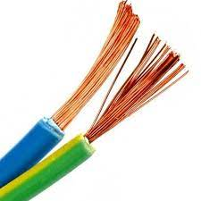
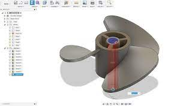

EDUCATION
INSTITUTIONS
Welcome to courses
Not everyone learns the same way. Good courses make sure to appeal to visual, kinesthetic, and other learning styles by providing a variety of multimedia content and carefully designed assignments that help students learn in the way that works best for them.
|
|
 |
| education is important |
education is key for sucess |
Education is a very powerful medium to grow in life and perceive something important. In a human’s life, education benefits a lot in decreasing the difficulties of a hard life. The expertise obtained through the education era encourages everybody regarding their life.Education is a way to enter into several doors for possibilities to obtain more real prospects in life to improve career growth.
computer science
Computer science focuses on the development and testing of software and software systems. It involves working with mathematical models, data analysis and security, algorithms, and computational theory. Computer scientists define the computational principles that are the basis of all software..
A programming language is a way for programmers (developers) to communicate with computers. Programming languages consist of a set of rules that allows string values to be converted into various ways of generating machine code, or, in the case of visual programming languages, graphical elements.
information technology
Information technology (IT) is the use of any computers, storage, networking and other physical devices, infrastructure and processes to create, process, store, secure and exchange all forms of electronic data. Typically, IT is used in the context of business operations, as opposed to technology used for personal or entertainment purposes. The commercial use of IT encompasses both computer technology and telecommunications.
|
|
 |

|
 |
| Information |
sql |
operating system |
networks |
Information is an abstract concept that refers to that which has the power to inform. At the most fundamental level, information pertains to the interpretation of that which may be sensed, or their abstractions.
electronics and comunication e
Electronics and Communications Engineering (ECE) involves researching, designing, developing, and testing electronic equipment used in various systems. Electronics and Communications engineers also conceptualise and oversee the manufacturing of communications and broadcast systems.
|
|
|
|
 |
resistor |
capacitor |
transistor |
chip |
capacitor is a two-terminal electrical device that can store energy in the form of an electric charge. It consists of two electrical conductors that are separated by a distance. The space between the conductors may be filled by vacuum or with an insulating material known as a dielectric.
electrical and electronics
Electrical engineering is an engineering discipline concerned with the study, design, and application of equipment, devices, and systems which use electricity, electronics, and electromagnetism.
|
|

|
|
 |
>RJ45 |
wires |
Ethernet |
connector |
The eight-pin RJ45 connector is a standardised interface which often connects a computer to a Local Area Network (LAN). This type of connector was originally developed for telephone communications but is now used in a range of applications.
Civil
Civil engineering is the professional practice of designing and developing infrastructure projects. This can be on a huge scale, such as the development of nationwide transport systems or water supply networks, or on a smaller scale, such as the development of individual roads or buildings.
|

|
|
|
|
>CAD |
design |
drafting |
projects |
The career scope of civil engineers is huge worldwide - as according to a new research report by Global Marketing Insights, Inc, the market size of civil engineering is expected to grow up USD 11.72 trillion by 2025.